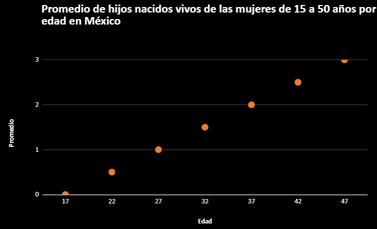
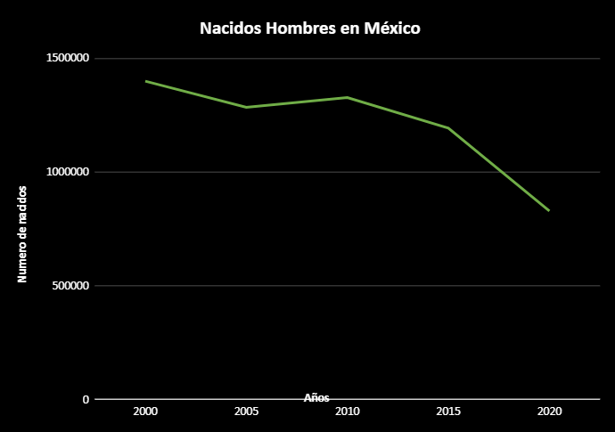
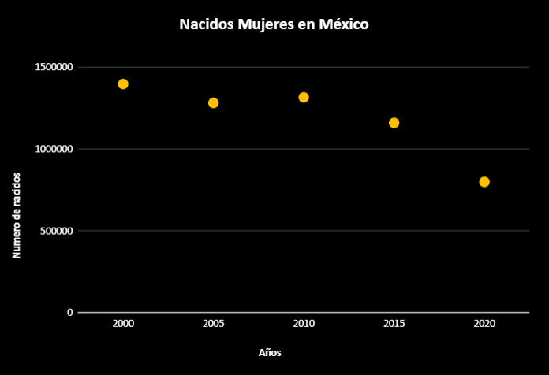
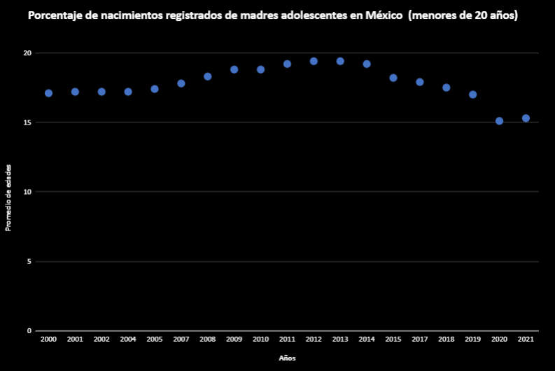
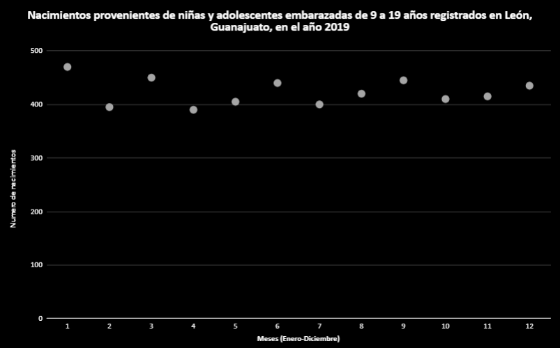
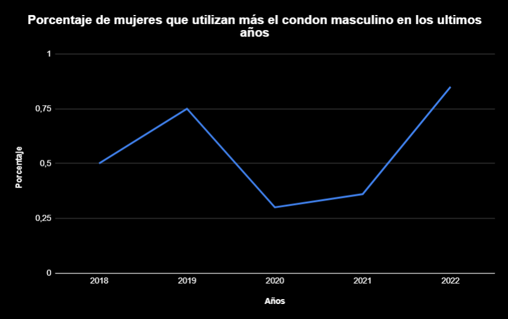
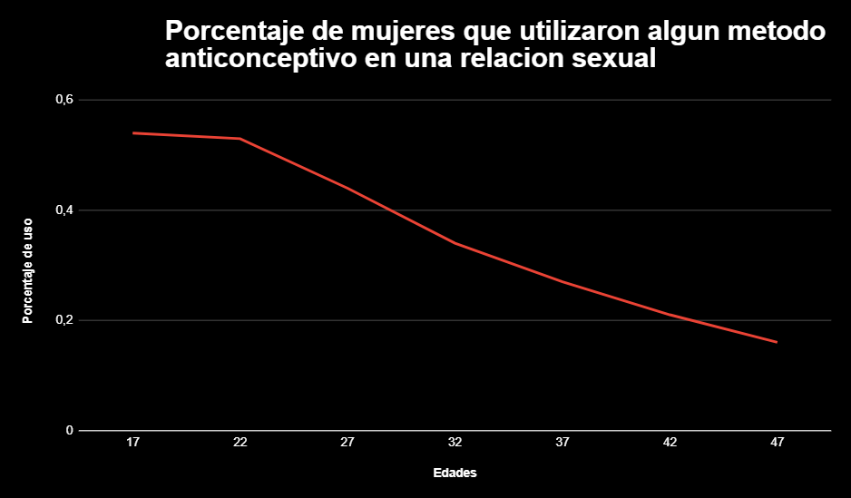
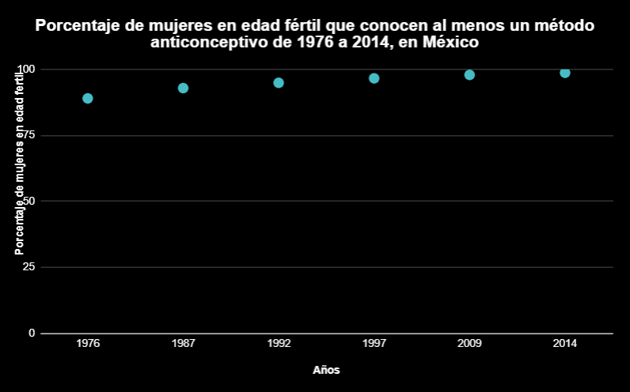
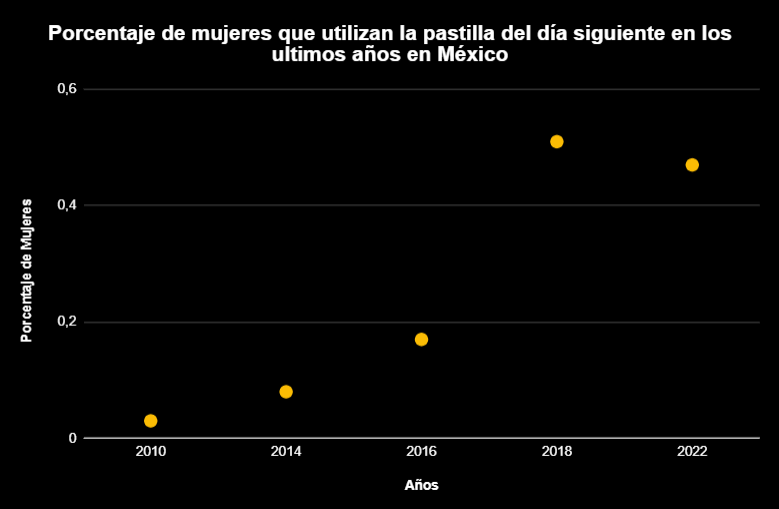
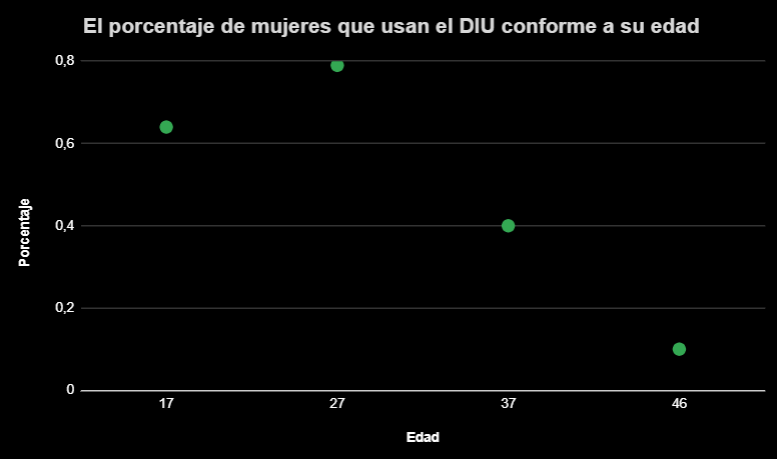

Tablas de datos clasificando por zona (nacional, estatal y municipal), edad y nivel socioeconómico.
5 gráficas de Reproducción: tasa de natalidad y tasa de embarazos.
|  |
| Esta gráfica muestra un promedio de los hijos que lograron nacer exitosamente de las mujeres que tienen edad de 15 a 50 años, en México. |
| Edad | Promedio |
| 17 | 0 |
| 22 | 0.5 |
| 27 | 1 |
| 32 | 1.5 |
| 37 | 2 |
| 42 | 2.5 |
| 47 | 3 |
| Dominio | Rango |
| (-∞,+∞) | [0,3] |
| Tipo de función |
| Polinomica de segundo grado |
| Función |
| y=0.1x-1.7 |
| Intervalos | |
| Crecientes | Decrecientes |
| [17,47] | 0 |
(INEGI,2020)
| 
|
| Esta gráfica muestra todos los hombres que han nacido en México del año 2000 a él 2020. |
| Años | Hombres |
| 2000 | 1.398.877 |
| 2005 | 1.284.304 |
| 2010 | 1.326.795 |
| 2015 | 1.192.795 |
| 2020 | 828.944 |
| Dominio | Rango |
| (-∞,+∞) | [828944,1398877] |
| Tipo de función |
| Polinomica de segundo grado |
| Función |
| y=-1873.6732 |
| Intervalos | |
| Crecientes | Decrecientes |
| [2005,2010] | [2000,2005] [2010,2020] |
(Expansión,2020)
|  |
|
Esta muestra todas las mujeres que han nacido en México del año 2000 a el 2020. |
| Años | Hombres |
| 2000 | 1.398.703 |
| 2005 | 1.283.009 |
| 2010 | 1.317.023 |
| 2015 | 1.160.760 |
| 2020 | 800.264 |
| Dominio | Rango |
| (-∞,+∞) | [800264,1398703] |
| Tipo de función |
| Polinomica de segundo grado |
| Función |
| y=-1888.1238 |
| Intervalos | |
| Crecientes | Decrecientes |
| [2005,2010] | [2000,2005] [2010,2020] |
(Expansión,2020)
| 
|
|
Esta gráfica muestra el registro de nacimientos de madres adolecentes con un promedio de edad que va de los 15 años a los 19 años, en México, del año 2000 a el 2021. |
| Años | Promedio de edades |
| 2000 | 17.1 |
| 2001 | 17.2 |
| 2002 | 17.2 |
| 2004 | 17.2 |
| 2005 | 17.4 |
| 2007 | 17.8 |
| 2008 | 18.3 |
| 2009 | 18.8 |
| 2010 | 18.8 |
| 2011 | 19.2 |
| 2012 | 19.4 |
| 2013 | 19.4 |
| 2014 | 19.2 |
| 2015 | 18.2 |
| 2017 | 17.9 |
| 2018 | 17.5 |
| 2019 | 17 |
| 2020 | 15.1 |
| 2021 | 15.3 |
| Dominio | Rango |
| (-∞,+∞) | [15.1,19.4] |
| Tipo de función |
| Polinomica de segundo grado |
| Función |
| y=-0.0227 |
| Intervalos | |
| Crecientes | Decrecientes |
| [2000,2013] [2020,2021] | [2013,2020] |
(INEGI,2020)
|  |
|
Esta gráfica muestra los nacimientos registrados de madres con edad de 9 a 19 años, en el año 2019, la gráfica esta acomodada por meses iniciando con enero y avanzando en orden hasta llegar a diciembe, en México en la ciudad de Léon Guanajuato. |
| Meses(Enero-Diciembre) | Número de edades |
| 1 | 470 |
| 2 | 395 |
| 3 | 450 |
| 4 | 390 |
| 5 | 405 |
| 6 | 440 |
| 7 | 400 |
| 8 | 420 |
| 9 | 445 |
| 10 | 410 |
| 11 | 415 |
| 12 | 435 |
| Dominio | Rango |
| (-∞,+∞) | [390,470] |
| Tipo de función |
| Polinomica de novenogrado |
| Función |
| y=-0.0023 |
| Intervalos | |
| Crecientes | Decrecientes |
| [2,3] [4,6] [7,9] [10,12] | [1,2] [3,4] [6,7] [9,10] |
(implan,2021)
|  |
| Esta gráfica muestra el porcentaje de mujeres que utilizan más el condón masculino que el femenino en México, en los años de 2018 a 2022 . |
| Años | Porcentaje |
| 2018 | 50% |
| 2019 | 75% |
| 2020 | 30% |
| 2021 | 36% |
| 2022 | 85% |
| Dominio | Rango |
| (-∞,+∞) | [36,85] |
| Tipo de función |
| Polinomica de segundo grado |
| Función |
|
Y=0.0707x²-0.3933x+0.954. |
| Intervalos | |
| Crecientes | Decrecientes |
| [2018, 2019] [2020,2022] | [2019,2020] |
(Anónimo, 2017)
|  |
| Esta gráfica muestra el porcentanje de mujeres que utilizaron algún tipo de metodo anticonceptivo en una relación sexual, de la edad de 17 a 47 años de edad, en México. |
| Edades | Porcentaje de uso |
| 17 | 54% |
| 22 | 53% |
| 27 | 44% |
| 32 | 34% |
| 37 | 27% |
| 42 | 21% |
| 47 | 16% |
| Dominio | Rango |
| (-∞,+∞) | [16,54] |
| Tipo de función |
| Lineal |
| Función |
| y= -0.0696x + 0.6343 |
| Intervalos | |
| Crecientes | Decrecientes |
| 0 | [17,47] |
(Anónimo, 2017).
|  |
| Esta gráfica muestra el porcentaje de mujeres que cuando estaban en edad fertil conocian al menos algun metodo anticonceptivo, del año de 1976 a el 2014, en México. |
| Años | porcentaje |
| 1976 | 89 |
| 1987 | 92.9 |
| 1992 | 94.9 |
| 1997 | 96.6 |
| 2009 | 97.9 |
| 2014 | 98.7 |
| Dominio | Rango |
| (-∞,+∞) | [89,98.7] |
| Tipo de función |
| Polinomica de segundo grado |
| Función |
| y= -0.0054 |
| Intervalos | |
| Crecientes | Decrecientes |
| [1976,2014] | 0 |
(INEGI, 2017)
|  |
| Esta gráfica muestra el porcentaje de mujeres que usan la pastilla del dia siguiente en México del año 2010 a el año 2022. |
| Años | Porcentaje |
| 2010 | 3% |
| 2014 | 8% |
| 2016 | 17% |
| 2018 | 51% |
| 2022 | 47% |
| Dominio | Rango |
| (-∞,+∞) | [3,51 |
| Tipo de función |
| Polinomica de cuarto grado |
| Función |
| y= -0.0009 |
| Intervalos | |
| Crecientes | Decrecientes |
| [2010,2018] [2018,2022] | [2013,2020] |
(Anónimo, 2017).
| 
|
| Esta gráfica muestra el porcentaje de mujeres que usan el DIU dependiendo de su edad, en México. |
| Edad | Porcentaje |
| 17 | 64% |
| 27 | 79% |
| 37 | 40% |
| 46 | 10% |
| Dominio | Rango |
| (-∞,+∞) | [10,79] |
| Tipo de función |
| Polinomica de tercer grado |
| Función |
| y= 0.0001 +0.3496x -2.6101 |
| Intervalos | |
| Crecientes | Decrecientes |
| [17,27] | [27,46] |